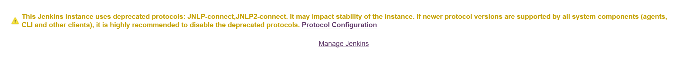
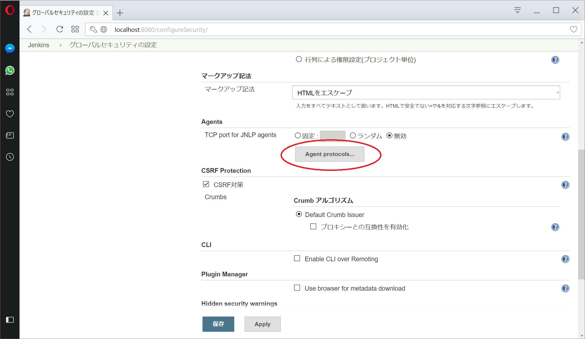
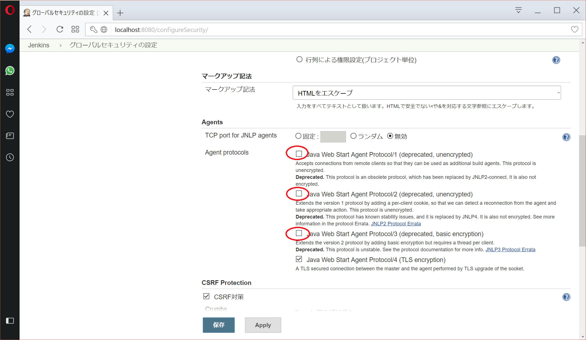

$Date: 2018-07-07 06:49:13 +0900 (2018/07/07 (土)) $
$Revision: 1347 $
Jenkins の警告 (古いプロトコル) が出ないようにする方法
リンク
参考:
Remoting Update. Protocols deprecation, Java 8 requirement and plans
Jenkins の警告
Jenkins を 2.75 以降にアップデートすると以下の警告が出るようになります。
This Jenkins instance uses deprecated protocols: JNLP-connect,JNLP2-connect.
It may impact stability of the instance. If newer protocol versions are supported
by all system components (agents, CLI and other clients), it is highly recommended
to disable the deprecated protocols.
こんな感じ

Jenkins の警告を無くす方法
1. "Protocol Configuation" をクリックすると http://jenkins/configureSecurity/ に移動します。
2. Agents の "Agent Protocols..." をクリックします。
3. 以下の 3 つの項目のチェックを外します。
- Java Web Start Agent Protocol/1 (deprecated, unencrypted)
- Java Web Start Agent Protocol/2 (deprecated, unencrypted)
- Java Web Start Agent Protocol/3 (deprecated, basic encryption)
4. 保存をクリックします。

